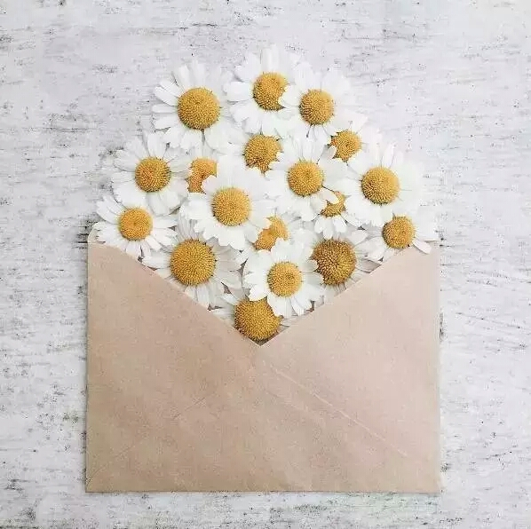

一封浪漫的情书 不需要华丽丽的语言
不需要惊天动地的爱情
只要有你在 就心安 有时我会想
人生漫漫 兜兜转转
找到你 实属不易 最好的爱情
并非有人懂你的言外之意
而是有人懂你的欲言又止

从浪漫到相守 时间越久
越不愿离开你 我知道遇到你不容易
错过了会很可惜 和你在一起
各种话题 永远说不完
重复的语言 也不觉得厌倦 最好的日子
无非是
我在闹 你在笑
如此温暖的过一生

哪怕你丰衣足食
也会觉得你处处需要照顾 你不在她身边
就在去她身边的路上


愿你惦念的人能和你道晚安
愿你独闯的日子里不觉得孤单 在摇晃的大地上
只要牵着你的手
就能前进 我羡慕的不是风华正茂的情侣
而是相伴到老的恋人 很想和你拥有一个很长很长的未来
很想和你得到所有人的祝福
很想陪你走完你的一生
彼此温暖 互不辜负 遇到喜欢的人就努力去爱吧
用力爱过的人 不该去计较
即便为了爱遍体鳞伤
也好过心如死灰的漫长 总想把世界上最好的都给你
却发现世界最好的就是你